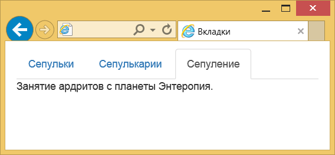
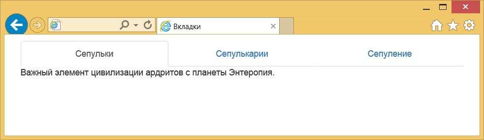
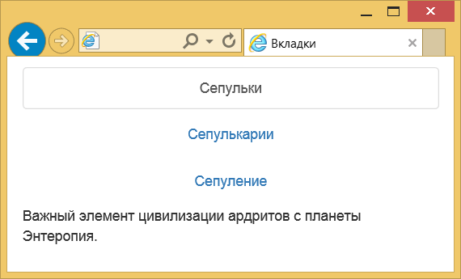
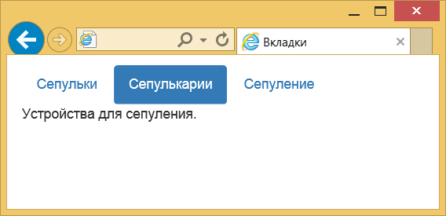
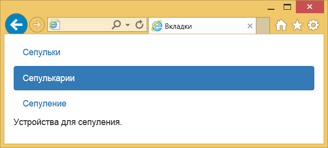

Вкладки
Вкладки как элемент интерфейса пришли из делопроизводства. В обычные деловые папки вставляют небольшие кусочки картона с надписями, которые позволяют быстро сориентироваться в содержании и перейти к нужному разделу. На сайтах вкладки применяются там, где требуется компактно и наглядно скомпоновать информацию по блокам. Переход по вкладкам происходит без перезагрузки страницы, что ускоряет работу и упрощает пользователю жизнь.
Код вкладок состоит из двух частей — это отображение самих вкладок, а также информации с ними связанных.
Вначале создаём список <ul> с классами nav и nav-tabs. Важны оба класса, иначе мы не получим желаемый вид. Каждая вкладка формируется элементом <li>, для текущей открытой вкладки требуется добавить класс active. Текст на вкладках делается с помощью ссылок, для каждой из них следует добавить атрибут data-toggle со значением tab. Сама ссылка указывает на элемент с идентификатором, который должен отображаться при открытии вкладки. Вот что в итоге получится.
<ul class="nav nav-tabs" role="tablist">
<li role="presentation" class="active"><a href="#tab1" role="tab" data-toggle="tab">Сепульки</a></li>
<li role="presentation"><a href="#tab2" role="tab" data-toggle="tab">Сепулькарии</a></li>
<li role="presentation"><a href="#tab3" role="tab" data-toggle="tab">Сепуление</a></li>
</ul>Даже с этим куцым кодом вкладки должны уже работать и визуально переключаться.
Переходим к выводимому тексту. Оборачиваем всё элементом <div> с классом tab-content, внутри для каждой вкладки делаем отдельный <div> с классом tab-pane. Плюс добавляем уникальный идентификатор, связывающий текст с самой вкладкой. Последний штрих — для текущей вкладки указываем класс active.
<div class="tab-content">
<div role="tabpanel" class="tab-pane active" id="tab1">
Важный элемент цивилизации ардритов с планеты Энтеропия.
</div>
<div role="tabpanel" class="tab-pane" id="tab2">
Устройства для сепуления.
</div>
<div role="tabpanel" class="tab-pane" id="tab3">
Занятие ардритов с планеты Энтеропия.
</div>
</div>Соединяем вместе два фрагмента и получаем итоговый код для создания вкладок.
Пример 1. Создание вкладок
<ul class="nav nav-tabs" role="tablist">
<li role="presentation" class="active"><a href="#tab1" role="tab" data-toggle="tab">Сепульки</a></li>
<li role="presentation"><a href="#tab2" role="tab" data-toggle="tab">Сепулькарии</a></li>
<li role="presentation"><a href="#tab3" role="tab" data-toggle="tab">Сепуление</a></li>
</ul>
<div class="tab-content">
<div role="tabpanel" class="tab-pane active" id="tab1">
Важный элемент цивилизации ардритов с планеты Энтеропия.
</div>
<div role="tabpanel" class="tab-pane" id="tab2">
Устройства для сепуления.
</div>
<div role="tabpanel" class="tab-pane" id="tab3">
Занятие ардритов с планеты Энтеропия.
</div>
</div>Результат данного примера показан на рис. 1.

Рис. 1. Вид вкладок
Плавный переход
Переход между вкладками происходит мгновенно, но можно сделать это с небольшим эффектом, если добавить класс fade к блоку с текстом. Тогда текст будет плавно исчезать и появляться. Для активной вкладки обязательно надо включить ещё один класс in, без него возникнут ошибки.
<div class="tab-content">
<div role="tabpanel" class="tab-pane active in fade" id="tab1">
Важный элемент цивилизации ардритов с планеты Энтеропия.
</div>
<div role="tabpanel" class="tab-pane fade" id="tab2">
Устройства для сепуления.
</div>
<div role="tabpanel" class="tab-pane fade" id="tab3">
Занятие ардритов с планеты Энтеропия.
</div>
</div>Вкладки на всю ширину
Размер вкладки зависит от длины текста в ней, но можно насильно изменить их ширину, чтобы вкладки занимали всё доступную ширину. Просто добавьте класс nav-justified к элементу <ul>.
<ul class="nav nav-tabs nav-justified" role="tablist">Вот как выглядят подобные вкладки (рис. 2).

Рис. 2. Вкладки на всю ширину
При уменьшении размера окна такие вкладки меняют свой вид и выстраиваются не по горизонтали, а друг под другом (рис. 3).

Рис. 3. Вид вкладок при уменьшении размера окна
Вид вкладок
Традиционно вкладки имеют вид унаследованный из жизни — выступающие из папки кусочки картона с надписью. Заменив класс nav-tabs на nav-pills получим вкладки в виде пилюль (рис. 4).

Рис. 4. Изменение вида вкладок
Код будет таким.
<ul class="nav nav-pills" role="tablist">Вкладки также можно расположить вертикально, для этого предназначен класс nav-stacked.
<ul class="nav nav-pills nav-stacked" role="tablist">Вид таких вкладок продемонстрирован на рис. 5.

Рис. 5. Вертикальное расположение вкладок

Все материалы сайта доступны по лицензии Creative Commons «Attribution-NonCommercial» («Атрибуция — Некоммерческое использование») 4.0 Всемирная, если не указано иное.